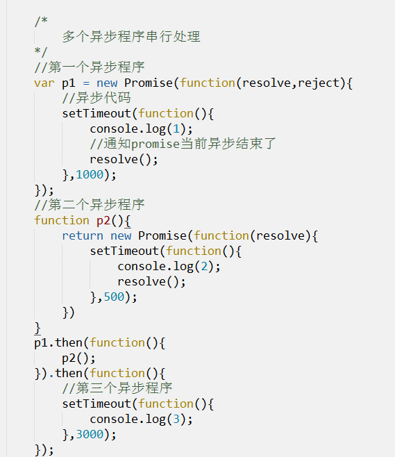

js-闭包和继承
作者： 千锋李文浩
时间： 17/02/21
Promise
1、什么是Promise？
a、实现异步编程的一种方案，比异步嵌套和回调函数更合理、强大。
b、Promise本身是一个对象，通过Promise可以获取异步操作的信息（异步是否完成）
2、Promise有什么用？
1、将异步编程思维简单化
2、多个异步任务的串行处理（先执行第一个异步，完成后执行第二个异步...）
3、多个异步任务的并行处理（同时执行多个异步操作，等待所有的异步操作完成才能做其他事情。）
3、怎么创建一个Promise对象？
var p = new Promise(function(resolve,reject){
//resolve 1、用于通知Promise对象异步程序成功了 (resolve() ) 2、是个方法
//reject 1、用于通知Promise对象异步程序失败了 (reject() ) 2、是个方法
//异步代码
});
//p此时就是一个Promise对象
说明：创建Promise对象的时候，异步代码就会执行
4、怎么实现2个异步任务串行？
var p1 = new Promise(function(resolve){
//第一个异步程序
setTimeout(function(){
console.log(1);
//异步完成通知Promise异步完成了，可以执行其他异步了
},1000);
});
//实现多个异步程序串行
p1.then(function(){
//第二个异步程序
setTimeout(function(){
console.log(2);
//异步完成通知Promise异步完成了，可以执行其他异步了
},2000);
});
5、怎么实现多个异步程序串行？

6、Promise异步处理程序之间怎么传递参数？
p1.then(f1,f2)
then方法可以传递两个函数，f1是p1成功时调用(resove())，f2是p1失败时调用(reject())，
参数可以通过resolve方法或者reject方法传递，如：
var p1 = new Promise(function(resolve){
setTimeout(function(){
console.log('第一个异步结束了');
//通知promise并传递参数
resolve('我是传递过来的数据');
});
});
p1.then(function(data){}
//data 是p1中异步程序结束之后resolve函数传递过来的
console.log(data);//'我是传递过来的数据'
setTimeout(function(){
console.log('第二个异步结束了');
});
);
7、怎么实现多个异步操作并行？
所谓并行，指的就是多个异步程序同时处理
var p1 = new Promise(function(resolve){
//第一个异步程序
setTimeout(function(){
console.log(1);
//异步完成通知Promise异步完成了，可以执行其他异步了
resolve();
},1000);
});
var p2 = new Promise(function(resolve){
//第二个异步程序
setTimeout(function(){
console.log(2);
//异步完成通知Promise异步完成了，可以执行其他异步了
resolve();
},2000);
});
var pAll = Promise.all([p1,p2]);
pAll.then(functuion(){
console.log('所有异步程序完成了');
});
实战
通过学生姓名读取学生信息和成绩
思考
怎么读取函数内的局部变量？
垃圾回收机制（扩展）
1、一般来说,一个函数在执行开始的时候,会给其中定义的变量划分内存空间保存,以备后面的语句所用,等到函数执行完毕返回了,这些变量就被认为是无用的了.对应的内存空间也就被回收了.下次再执行此函数的时候,所有的变量又回到最初的状态,重新赋值使用.
2、但是如果这个函数内部又嵌套了另一个函数,而这个函数是有可能在外部被调用到的.并且这个内部函数又使用了外部函数的某些变量的话.这种内存回收机制就会出现问题.如果在外部函数返回后,又直接调用了内部函数,那么内部函数就无法读取到他所需要的外部函数中变量的值了
3、函数中的函数一旦被外界引用，浏览器将不回收创建的内存
面试题（重）
1、什么是闭包？
2、闭包有什么用？
3、说几个闭包的使用场景
什么是闭包？（重）
1、官方：闭包是指可以包含自由（未绑定到特定对象）变量的代码块；这些变量不是在这个代码块内或者任何全局上下文中定义的，而是在定义代码块的环境中定义（局部变量）。
2、简单理解：闭包就是在函数A外部能够访问函数A内部变量的函数
function test(){
var a = 10;
return function(){
console.log(a);
}
}
//fn就是闭包（也就是返回的匿名函数）
var fn = test();
fn()
闭包的作用（重）
1、可以读取可控制函数内部的变量
2、让变量的值始终保持在内存中
3、保护函数内的变量安全。（只能通过闭包函数访问）
闭包的使用场景（重）
1、循环保留变量i的值
2、函数自运行
3、获取函数内部的变量
闭包说明
1、不要刻意的使用闭包，尽量少使用闭包。
2、闭包就会开辟内存，可能造成内存泄漏
实战
1、我的银行
2、循环添加事件
3、自运行
构造函数（回顾）
1、什么是构造函数？
代表的是含有相同特征的事物（类）
2、构造函数怎么声明？有什么特点？
function Person(name){
this.name = name;
this.eat = function(){}
}
var p = new Person();
思考
function Person(name){
this.name = name;
this.speak = function(){
console.log(this.name + "正在自言自语");
}
}
var zs = new Person('张三');
var ls = new Person('李四');
张三的speak方法和李四的speak方法是同一个方法吗？
怎么才能让张三和李四共用一个speak方法？
zs.speak == ls.speak
原型protorype（重）
1、什么是原型？
1、prototype是函数自带的一个属性
2、prototype属性指向了一个对象（原型对象），简称原型，所以prototype称为原型。
2、原型有什么用？
1、 节约内存开支
将构造函数（类）的公用方法写在原型中，生成的实例所拥有的方法都是指向同一个地址，这样可以节省内存。
2、扩展属性和方法
3、可以很好的实现类之间的继承
3、怎么使用原型给构造函数的实例添加方法
1、因为prototype是个对象，所以可以直接添加属性和方法
2、
function Person(){
}
Person.prototype.eat = function(){
//扩展方法
}
__proto__（重）
1、是对象自带的一个属性
2、__proto__指向的是创造的自己那个构造函数的原型
fucntion Person(){}
var p = new Person();
p.__proto__ === Person.prototype
prototype/__proto__/constructor(重)

call和apply（重）
1、所有函数自带的方法
2、call
用于改变方法的调用者（让obj去调用方法）
用于改变this指向的（将方法中的this指向obj）
写法：
方法名.call(obj,arg1,arg2,....)
参数说明：
第一个参数是对象，后面的就是函数对应的形参
apply 与 call的作用是一样的
传递参数不一样
方法名.apply(obj,集合); 集合可以是数组、arguments、元素集合
3、demo：


什么是继承
继承方式（重）
1、构造函数继承
2、call/apply继承
3、原型链继承
4、混合继承（常用）
预习
1、什么是继承？
2、继承有哪些方式？
3、什么是原型链？
4、分析飞机大战中有哪些对象？每个对象有什么功能？